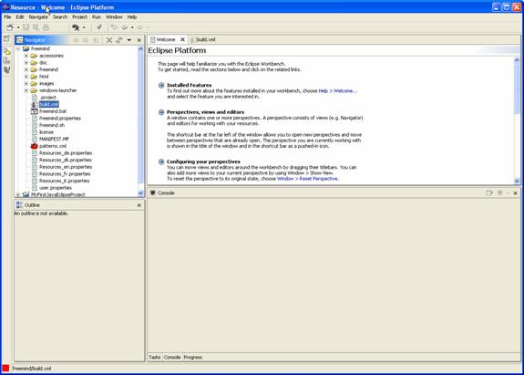
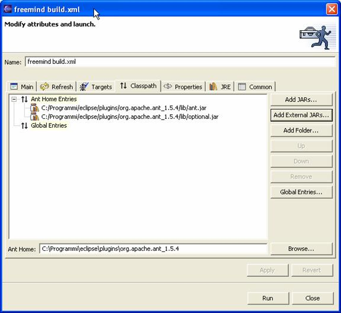
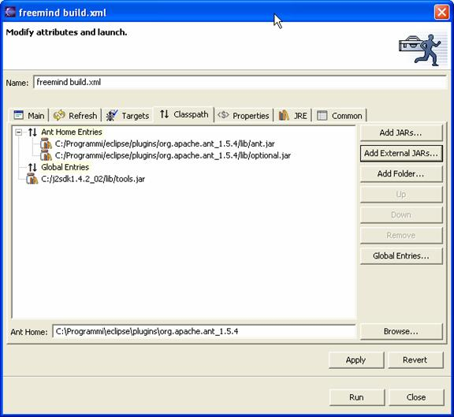

Now if you switch to the “Resource Perspective” you will see a “freemind” entry:
Expand the “freemind” entry (forget about the other one … it is only an experiment of mine and you will probably not have it).
Select the “build.xml” file and right click on it and choose the “Run Ant” entry. You will see the following screen:
It should be exactly like you see above. Now select the Classpath entry from this window:

Click on the “Add External JARs…” button and select the tools.jar from the lib directory of the JDK you have downloaded. See next picture for the default filename:

You can see that we have added the C:/j2sdk1.4.2_02/lib/tools.jar file. You will have to perform this step only once of course.
Now click on the Run button and Freemind will be (hopefully) compiled.

You should see some messages about Buildfile: C:\Programmi\eclipse\workspace\freemind\build.xml
from which you can understand that your local copy of the Freemind sources are hosted in the workspace\freemind subdirectory of your Eclipse program.
Your freshly compiled Freemind program will be produced into C:\Programmi\eclipse\workspace\bin\dist which contains all of Freemind needed files to run (of course you always need a JRE don't' you 8->).